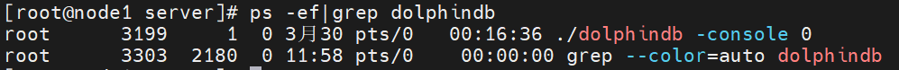
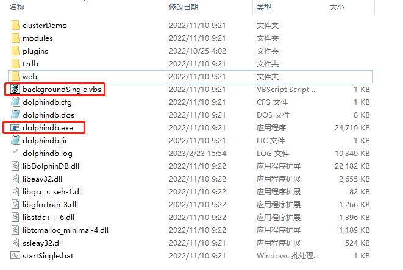
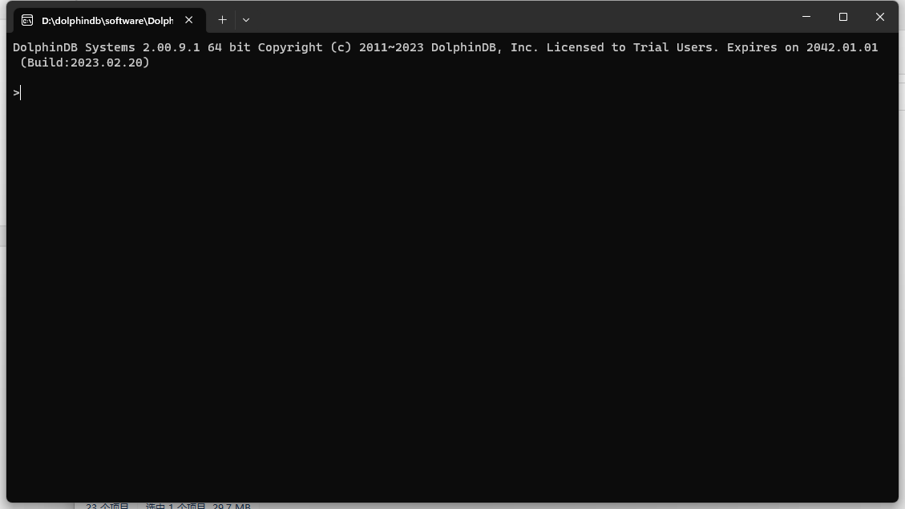
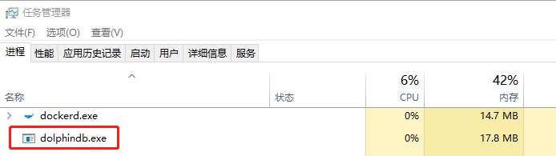
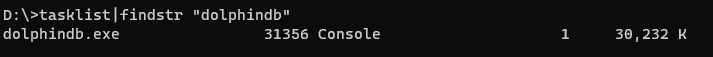
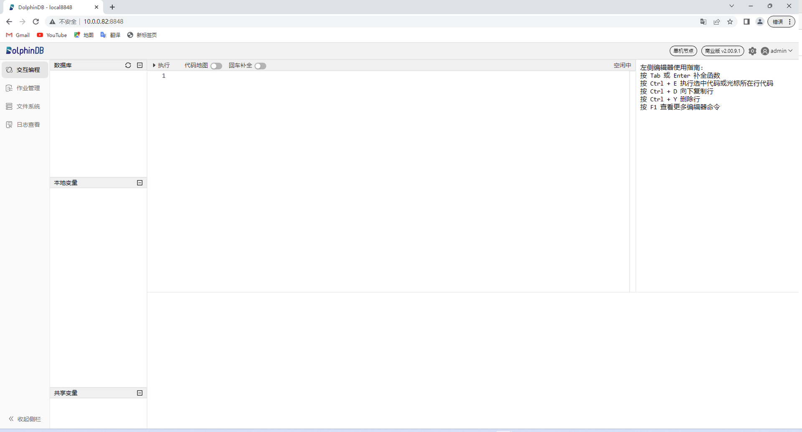
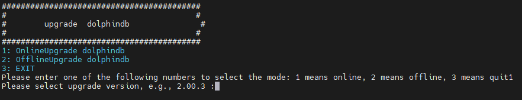
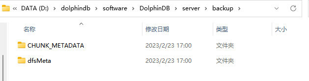

单节点部署与升级
本教程用于单节点的部署、升级、过期 License 升级，并对常见问题做出解答，便于用户快速上手 DolphinDB。包含以下主题：
在 Linux 操作系统部署 DolphinDB 单节点
第一步：下载
官方下载地址：https://dolphindb.cn/product#downloads
也可以通过 Shell 指令下载。下载方式如下：
wget https://www.dolphindb.cn/downloads/DolphinDB_Linux64_V${release}.zip -O dolphindb.zip其中，
${release}代表版本。例如：下载 2.00.11.3 版本的 Linux64 server，使用以下指令：wget https://www.dolphindb.cn/downloads/DolphinDB_Linux64_V2.00.11.3.zip -O dolphindb.zip如需下载 ABI 或 JIT 版本 server，则需要在版本号后以下划线连接 ABI 或 JIT。例如：下载 2.00.11.3 版本的 Linux64 ABI server, 使用以下指令：
wget https://www.dolphindb.cn/downloads/DolphinDB_Linux64_V2.00.11.3_ABI.zip -O dolphindb.zip下载 2.00.11.3 版本的 Linux64 JIT 版本 server，使用以下指令：
wget https://www.dolphindb.cn/downloads/DolphinDB_Linux64_V2.00.11.3_JIT.zip -O dolphindb.zip以此类推。
执行以下 Shell 指令解压安装包至指定路径(
/path/to/directory)：unzip dolphindb.zip -d </path/to/directory>
注意： 安装路径的目录名中不能含有空格字符或中文字符，否则启动数据节点时会失败。
第二步：更新软件授权许可
如果用户拿到企业版试用授权许可，只需用其替换如下文件即可。
/DolphinDB/server/dolphindb.lic如果用户没有申请企业版试用授权许可，可以直接使用程序包中的社区版试用授权许可。社区试用版指定 DolphinDB 单节点最大可用内存为 8GB，有效期为20年。
第三步：启动单节点
进入 /DolphinDB/server 目录，第一次启动时需要修改文件权限，执行以下 Shell 指令：
chmod +x dolphindb前台运行
执行以下 Shell 指令：
./dolphindb系统默认端口号是8848。如果需要指定其它端口（例如8900）可以执行以下 Shell 指令：
./dolphindb -localSite localhost:8900:local8900后台运行
执行以下 Shell 指令：
sh startSingle.sh可以执行以下 Shell 指令以验证节点是否成功启动：
ps aux|grep dolphindb返回如下信息说明后台启动成功：

第四步：Web 管理界面检查节点运行状态
在浏览器中输入部署服务器 IP 地址和部署端口号（默认是 8848）即可进入 Web 管理界面， 教程中的部署服务器 IP 地址为 10.0.0.82，部署端口为 8848，所以访问地址为 10.0.0.82:8848， 打开后的 Web 管理界面如下：

注意：如果浏览器与 DolphinDB 不是部署在同一台服务器，应事先关闭防火墙或者打开对应的部署端口，Web 管理界面才能正常打开。
在 Windows 操作系统部署 DolphinDB 单节点
第一步：下载
官方下载地址：http://www.dolphindb.cn/downloads.html
解压安装包，例如解压到如下目录：
C:\DolphinDB注意：安装路径的目录名中不能含有空格字符或中文字符，否则启动数据节点时会失败。例如不要装到 Windows 系统的 Program Files 目录下。
第二步：更新软件授权许可
如果用户拿到企业版试用授权许可，只需用其替换如下文件即可：
C:\DolphinDB\server\dolphindb.lic如果用户没有申请企业版试用授权许可，可以直接使用程序包中的社区版试用授权许可。社区试用版指定 DolphinDB 单节点最大可用内存为 8GB，有效期为 20 年。
第三步：启动单节点
进入 C:\DolphinDB\server 目录，可以看到如下内容：

前台运行
双击运行 dolphindb.exe，出现如下界面：
系统默认端口号是 8848，可以通过修改配置文件 dolphindb.cfg 中的 localSite 参数指定其它端口。
后台运行
双击运行 backgroundSingle.vbs，然后打开 Windows 任务管理就可以查看到 DolphinDB 后台进程：
也可以打开命令提示符，执行以下指令查看 DolphinDB 后台进程，确认是否启动成功：
tasklist|findstr "dolphindb"

第四步：Web 管理界面检查节点运行状态
在浏览器中输入部署服务器 IP 地址和部署端口号（默认是 8848）即可进入 Web 管理界面， 教程中的部署服务器 IP 地址为 10.0.0.82，部署端口为 8848，所以访问地址为 10.0.0.82:8848， 打开后的 Web 管理界面如下：

注意：如果浏览器与 DolphinDB 不是部署在同一台服务器，需要关闭防火墙或者打开对应的部署端口，web 管理界面才能正常打开。
单节点升级
Linux 单节点升级
第一步：正常关闭单节点
进入 /DolphinDB/server/clusterDemo 目录执行以下 Shell 指令：
./stopAllNode.sh第二步：备份旧版本的元数据文件
单节点元数据的默认存储目录：
/DolphinDB/server/local8848/dfsMeta//DolphinDB/server/local8848/storage/CHUNK_METADATA/可在 /DolphinDB/server 目录执行以下 Shell 指令备份单节点元数据：
mkdir backup
cp -r local8848/dfsMeta/ backup/dfsMeta
cp -r local8848/storage/CHUNK_METADATA/ backup/CHUNK_METADATA注意：元数据文件可能通过配置文件指定存储在其它目录，如果在默认路径没有找到上述文件，可以通过查询配置文件中的 dfsMetaDir 参数和 chunkMetaDir 参数确认元数据文件的存储目录。若配置中未指定 dfsMetaDir 参数和 chunkMetaDir 参数，但是配置了 volumes 参数，则 CHUNK_METADATA 目录在相应的 volumes 参数指定的目录下。
第三步：升级
注意：当 server 升级到某个版本后，使用的插件也应升级到与此对应的版本。
在线升级
进入 /DolphinDB/server/clusterDemo 目录执行以下 Shell 指令：
./upgrade.sh运行后将会出现如下提示：

输入 y 并点击回车后会出现如下提示：

输入 1 选择在线更新，并点击回车后会出现如下提示：
输入所需更新的版本号再点击回车即可，以更新至 2.00.9.1 版本为例，输入 2.00.9.1 后点击回车，出现如下界面则表示升级成功：

离线升级
下载升级所需版本的安装包，官方下载地址：http://www.dolphindb.cn/downloads.html。
将下载好的安装包上传至 /DolphinDB/server/clusterDemo 目录下，以更新至 2.00.9.1 版本为例：

进入 /DolphinDB/server/clusterDemo 目录执行以下 Shell 指令：
./upgrade.sh运行后将会出现如下提示：

输入 y 并点击回车后会出现如下提示：

输入 2 选择离线更新，并点击回车后会出现如下提示：

输入所需更新的版本号再点击回车即可，以更新至 2.00.9.1 版本为例，输入 2.00.9.1 后点击回车，出现如下界面则表示升级成功：

第四步：重新启动单节点
进入 /DolphinDB/server 目录执行以下 Shell 指令，后台运行 DolphinDB：
sh startSingle.sh成功启动后，打开 Web 管理界面，在交互编程界面执行以下代码，查看 DolphinDB 当前版本：
version()Windows 单节点升级
第一步：正常关闭单节点
- 如果是前台运行，关闭前台程序窗口
- 如果是后台运行，打开 Windows 任务管理器，找到 DolphinDB 的后台进程并关闭
第二步：备份旧版本的元数据文件
单节点元数据的默认存储目录：
C:\DolphinDB\server\local8848\dfsMeta\C:\DolphinDB\DolphinDB\server\local8848\storage\CHUNK_METADATA\进入 C:\DolphinDB 目录，在该目录下创建文件夹 backup， 然后把 C:\DolphinDB\server\local8848 文件夹下的 dfsMeta 文件及 C:\DolphinDB\server\local8848\storage 文件夹下的 CHUNK_METADATA 文件复制到上面创建的 backup 文件夹下， 如下图所示：

注意：元数据文件可能通过配置文件指定存储在其它目录，如果在默认路径没有找到上述文件，可以通过查询配置文件中的 dfsMetaDir 参数和 chunkMetaDir 参数确认元数据文件的存储目录。若配置中未指定 dfsMetaDir 参数和 chunkMetaDir 参数，但是配置了 volumes 参数，CHUNK_METADATA 目录在相应的 volumes 参数指定的目录下。
第三步：升级
- 下载所需升级版本的安装包，官方下载地址：https://dolphindb.cn/product#downloads
- 将新版本 server 目录下除 dolphindb.cfg 以及 dolphindb.lic 外的所有文件覆盖替换旧版文件
第四步：重新启动单节点
双击运行 dolphindb.exe 后在前台运行 DolphinDB。
成功启动后，打开 Web 管理界面，在交互编程界面执行以下代码，查看 DolphinDB 当前版本：
version()授权许可文件过期更新
第一步：替换授权许可文件
用新的授权许可文件 dolphindb.lic 替换旧的授权许可文件。
Linux 环境授权许可文件位置：
/DolphinDB/server/dolphindb.licWindows 环境授权许可文件位置：
C:\DolphinDB\server\dolphindb.lic第二步：更新授权许可文件
在线更新
打开 Web 管理界面，在交互编程界面执行以下代码完成更新：
updateLicense()注意：在线更新有如下要求：
- License 授权的客户名称必须与原来的 License 相同。
- 授权的节点个数，内存大小，CPU 核数不能比原来的小。
- 更新只在执行该函数的节点生效。因此在集群环境下，需要在所有控制节点、代理节点、计算节点和数据节点上运行该函数。
- License 的类型必须是 commercial（付费）类型和 free 类型。
离线更新
关闭 DolphinDB 后，重新启动，即可完成更新。
常见问题解答（FAQ）
端口被其它程序占用导致启动失败怎么办？
DolphinDB 单节点默认启动端口是 8848，如果遇到无法启动 DolphinDB 的情况， 建议打开 /DolphinDB/server 目录下的 dolphindb.log 日志文件，若出现如下错误：
<ERROR> :Failed to bind the socket on port 8848 with error code 98说明选用的端口被其他程序占用，导致 DolphinDB 无法正常启动，修改配置文件中的端口为其它空闲端口后即可正常启动。
Web 管理界面无法访问怎么办？
DolphinDB 正常启动后，在浏览器输入正确的访问地址，但 Web 管理界面无法正常打开，如下图所示：

出现上述问题的原因通常是由于浏览器与 DolphinDB 不是部署在同一台服务器， 且部署 DolphinDB 的服务器开启了防火墙。可以通过关闭部署了 DolphinDB 的服务器的防火墙或者打开对应的部署端口，解决这个问题。
Linux 升级失败如何版本回退？
如果升级以后，不能正常开启单节点 DolphinDB ，可按以下方式回退到旧版本。
第一步：恢复旧版本元数据文件
在 /DolphinDB/server 目录执行以下 Shell 指令恢复已备份的单节点元数据：
cp -r backup/dfsMeta/ local8848/dfsMeta
cp -r backup/CHUNK_METADATA/ local8848/storage/CHUNK_METADATA第二步：恢复旧版本程序文件
在官方下载旧版本程序包，把重新下载的旧版本 server 目录下除 dolphindb.cfg 以及 dolphindb.lic 外的所有文件覆盖替换升级失败的文件。
Windows 升级失败如何版本回退？
如果升级以后，不能正常开启单节点 DolphinDB ，可按以下方式回退到旧版本。
第一步：恢复旧版本元数据文件
- 用升级前备份在 backup 目录下的 dfsMeta 文件复制替换 local8848 目录下的 dfsMeta 文件。
- 用升级前备份在 backup 目录下的 CHUNK_METADATA 文件复制替换 local8848/storage 目录下的 CHUNK_METADATA 文件。
第二步：恢复旧版本程序文件
在官方下载旧版本程序包，将重新下载的旧版本 server 目录下除 dolphindb.cfg 以及 dolphindb.lic 外的所有文件覆盖替换升级失败的文件。
在线更新授权文件失败怎么办？
在线更新授权文件需要满足更新授权许可文件中在线更新的要求。如果不满足其中的要求，可以通过离线方式进行更新，或在DolphinDB官网申请企业版 License。
如何进行配置参数调优？
可以参考 DolphinDB 官方参数配置说明进行配置参数调优：参数配置。
如果遇到性能问题，请添加微信号13306510479 或扫描下面二维码，客服会邀您进群，由 DolphinDB 技术支持工程师会解答您的问题。